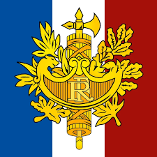

Francia
Bandera
Escudo

Datos
Himno
-- seleccione opcion --
-- Tamaño --
-- Población --
-- Rey de 20 minutos --
-- Matrimonio póstumo --
-- Billetes de tren para caracoles --
-- La Torre Eiffel "crece" --
-- Prohibición de besos --
Selecione el idioma